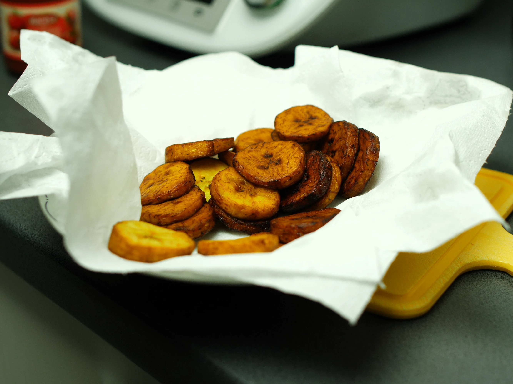

Placuszki z Banana Plantain (Kelewele)
Kelewele to ukochane ghańskie jedzenie uliczne zawierające dojrzałe plantainy przyprawione aromatycznymi przyprawami i usmażone do chrupiącej perfekcji. Połączenie słodkich plantainów i pikantnych przypraw tworzy nieodpartą przekąskę.

Samouczek Wideo
Składniki
- 4 dojrzałe plantainy (żółte z czarnymi plamkami dla najlepszej słodyczy)
- 2 łyżki świeżego imbiru, obr anego i startego
- 1 mała cebula, drobno posiekana
- 1 łyżeczka pieprzu cayenne (dostosuj według preferencji ostrości)
- 1 łyżeczka papryki
- 1/2 łyżeczki goździków mielonych
- 1/2 łyżeczki soli
- 1/4 łyżeczki czarnego pieprzu
- Olej roślinny do głębokiego smażenia (około 3-4 szklanek)
Instrukcje
- Przygotuj plantainy: Obierz dojrzałe plantainy. Pokrój je na małe kostki (około 2,5 cm) lub przekątne plastry. Kawałki powinny być jednolite dla równomiernego gotowania.
- Zrób mieszankę przyprawową: W dużej misce łącz starty imbir, drobno posiekaną cebulę, pieprz cayenne, paprykę, goździki mielone, sól i czarny pieprz. Dobrze wymieszaj, aby stworzyć aromatyczną mieszankę przypraw.
- Marynuj plantainy: Dodaj pokrojone kawałki plantaina do mieszanki przypraw. Delikatnie wymieszaj rękami lub łyżką, aby pokryć każdy kawałek równomiernie przyprawami. Pozostaw do marynowania na 10 minut, aby wchłonęły smaki.
- Rozgrzej olej: Wlej olej roślinny do głębokiej patelni, patelni lub garnka, aż będzie głęboki na około 5 cm. Rozgrzej na średnio-wysokim ogniu do 175°C. Sprawdź gotowość, wrzucając mały kawałek plantaina - powinien natychmiast zacząć skwierczeć.
- Smaż partiami: Ostrożnie dodaj kawałki plantaina do gorącego oleju partiami, upewniając się, że nie przepełniasz patelni. Smaż przez 3-4 minuty z każdej strony, obracając od czasu do czasu, aż staną się złocisto-brązowe i chrupiące na brzegach.
- Odsącz i podawaj: Wyjmij smażone plantainy durszlakową łyżką i przenieś na talerz wyłożony ręcznikami papierowymi, aby odsączyć nadmiar oleju. Podawaj natychmiast, gdy są gorące i chrupiące. Ciesz się jako przekąską lub dodatkiem!
Wskazówki i Uwagi
- Dojrzałość plantainów: Użyj dojrzałych plantainów o żółtej skórze z czarnymi plamkami dla idealnej równowagi słodyczy. Unikaj zielonych plantainów - są zbyt skrobiowe do tego przepisu.
- Temperatura oleju: Utrzymanie odpowiedniej temperatury oleju (175°C) jest kluczowe. Zbyt gorący i przypalą się na zewnątrz, pozostając surowe w środku; zbyt chłodny i wchłoną zbyt dużo oleju.
- Warianty przypraw: Dostosuj pieprz cayenne w zależności od tolerancji na ostrość. Niektóre przepisy zawierają gałkę muszkatołową lub anyż dla dodatkowej złożoności smaku.
- Propozycje podania: Kelewele jest tradycyjnie podawane jako przekąska z orzechami lub jako dodatek do grillowanej ryby lub kurczaka. Świetne również na śniadanie!
- Przechowywanie: Najlepiej cieszyć się świeżo, ale resztki można przechowywać w lodówce przez 2 dni i podgrzewać w piekarniku w 175°C przez 10 minut, aby przywrócić chrupkość.